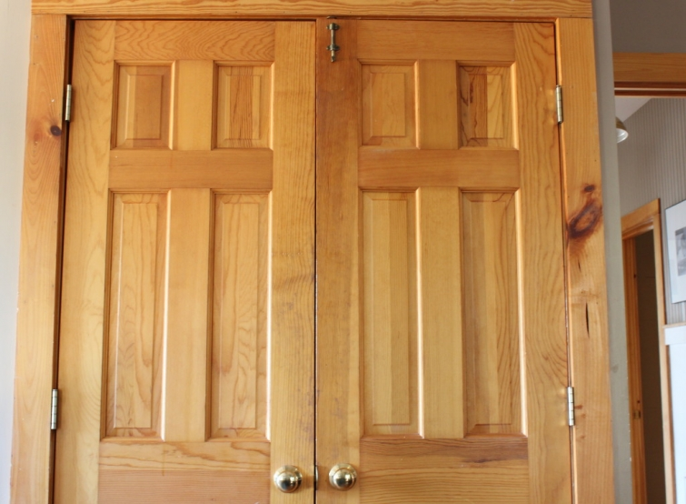
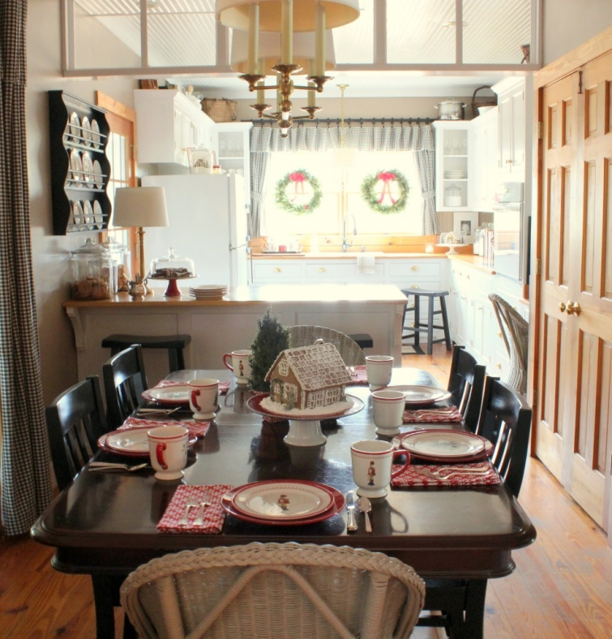
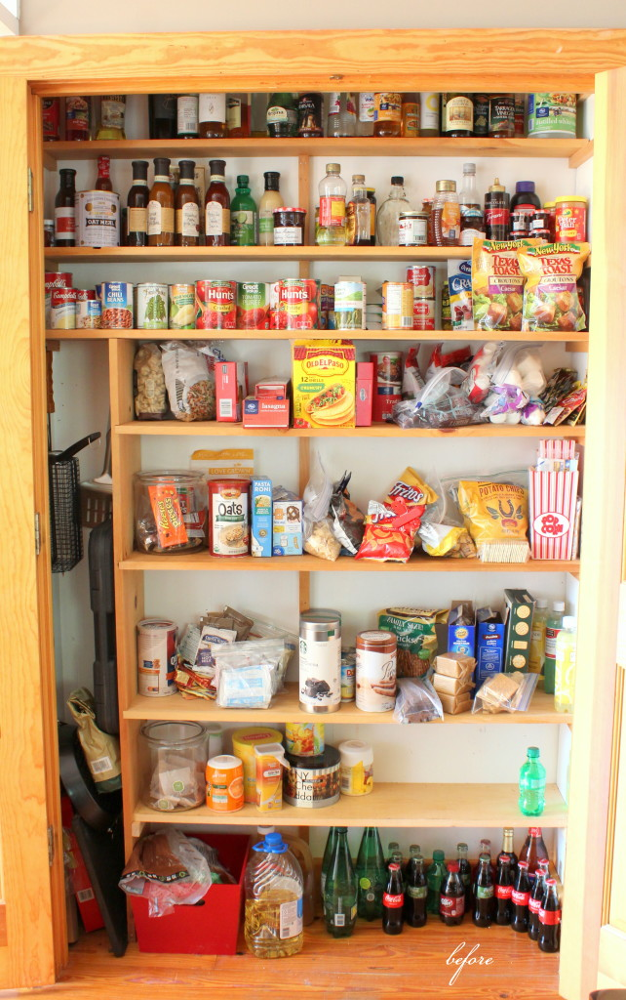

.png)
.PNG)
.PNG)
.PNG)
.PNG)
.JPG)
.JPG)
.PNG)
.PNG)



Hi Folks!  Time to share another organization project from around here.  This one took A LOT longer to complete than I thought it would (which is why there have been no blog posts this week. 🙠) I knew I wanted to organize the pantry, but with last month’s multiple parties and overnight guests for a wedding at the end of the month, I procrastinated. So let’s get to the start of this project….a project that actually began over 10 years ago.
Our pantry was once located behind a wall that separated our dining and kitchen areas. Â You can read about it here, and you can see its current location in the old photo below. Â My husband took out the wall that was once where the transom window is currently located, and he built a pantry in the dining area reusing the shelves and double doors to construct it. Â (You can read about that here.)

That process took a looooong time, and I am not the most patient person when all your food items are crammed into assorted places and your kitchen is a construction zone. Â So when he finished building the shelves in the pantry, I didn’t wait to paint the interior. Instead, I moved all the food in it as fast as I could, and every year since then I have said…
I am going to paint that pantry. Â
I am going to paint that pantry.
But I never did. 🙁

Until now. 🙂
It had become a jumbled mess, and I thought if I am going to reorganize it, I should just go ahead and paint it too. Â When you reorganize a pantry, you make a mess…a BIG mess….which is why I kept putting off this project… especially during this last month with so many guests in and out of here. Â But I did manage to get it done in the last couple of weeks, and here are my do-it-yourself steps if you are ready to tackle yours:
Step 1: Â Take everything out of the pantry.
Step 2: Â Group similar items together.
Step 3: Â Check the expiration date on all items and dispose of old foods.

Now to tackle the pantry itself.
Step 4:  Clean all surfaces (and paint or wallpaper the walls if you’d like to. 🙂 )
Ah, so much better.
Step 5: Â Think about where you use your items and what makes the most sense for their location in your kitchen. Move your foods to cabinets that are closest to where you use them.
We had all our canned goods and sauces – things we cook with every day – in that pantry…the pantry that we had to walk several steps to in order to retrieve those items. Â We had our baking supplies – things we use less frequently – in the cabinet near the stove. Â That didn’t make sense, so I decided to swap out the location of them. Â Yes, the domino effect began.
Here is the “baking supplies cabinet” before…
And now that same cabinet with our everyday canned goods and bottles.
Step 6: Â Before moving the remaining foods into the pantry, decide whether you want to keep them in their original packaging or in storage containers.
I was tired of all our original-packaging-in-zip-lock bag storage and wanted to use actual containers. I checked out numerous blog posts about redoing pantries with Dollar Tree storage containers. Â So I started looking there. Â Unfortunately, our local Dollar Tree had very little, and I needed quite a few containers.
On to Plan B.
I had really really loved the storage containers by oxo for a while, and I’ve read many favorable reviews and only a few negative ones on them.


But good grief they are expensive! Â Then I started seeing them at Home Goods (happily at about half the retail price!)
Step 7: Â If using purchased containers, make a list of your needs and what size containers you will use.
I began collecting the oxo pieces a few at a time and matched them up to our foods. Â Then I made a list of the remaining foods and what size containers would work for them. Â After numerous trips, I finally had enough for almost all of our food storage.
Step 8: Â Cut off cooking directions from packages, and tape them to the back of the storage containers.
(This will only have to be done once as the containers are initially filled.)
Obviously not everything needed a separate container, so I found some baskets at Target that worked well for all the remaining items. I waited until they were on sale and made a couple of trips to find all that were needed.
 Step 9:  Make labels for all storage containers and baskets.
I found scallop circle labels on the aisle with wedding invitations in Michaels and used my printer to make all the labels. Â The stickers for the baskets were adhered to cardstock then cut out, and the stickers for the containers went straight on the jars.
Step 10: Â Decide how your foods work best in your space, while trying to keep like items together as much as possible. Â Then move them into the pantry.
Here is how ours worked out.
Much much better than how it started! 🙂
Here’s the final before-and-after shot.
And a few random final thoughts…The grill items in the tall section of the pantry were moved outside to the grill, and I decided that area made a good spot to hang aprons. Â I did not want to put the oils with the beverages, but there was no other spot for them due to their height. Â I left a small open space on the top shelf for miscellaneous items we purchase that do not fit in any of the storage containers (Pasta Roni for example.)
Now do you remember I said the domino effect is going on again?  Well, even though the pantry is finished, I still have the matter of the non-food items from the former “baking cabinet” to find a place for.  Sooo…I am rethinking the use of part of the island along with moving a few other things around.  Here we go again! 🙂
I hope a fun weekend is ahead for you whether you are spending time outdoors or working on some home organization. Â Don’t forget to watch the series finale of Downton on Sunday night!
Until next time…

Linking up with Laura at Decor To Adore.


.PNG)
Good Morning Kelly,
What a fabulous job you did and what a huge undertaking as well.
We recently moved into our new home, I am trying my best to keep a handle on the pantry. Seems once you loose control of them, they get way out of hand and I don’t want to have start all over.
Thank you for sharing your tips on how to organize a pantry as well as your time and talents with us-
At Thoughts Of Home On Thursday.
Jemma
———————————————————————-
Thank you Jemma! You are so right about pantries being a place that can get way out of hand. I hope with a little extra effort when I get groceries that we will be able to keep ours in this state of organization. I was delighted to share the post with the link party. Thank you for helping to host it and for popping over!
Kelly
Hi Kelly. It’s so good to see you at Thoughts of Home on Thursday. Pantries are a constant challenge, aren’t they? I’m just so glad to have one now because in Oklahoma we never did. Your project turned out beautifully. You always think of every possible detail to make things perfect. 🙂
———————————————————————–
Thank you Stacey. There are a lot of good links at the Thoughts of Home on Thursday link party. I was happy to be able to join in. Yes, pantries seem to require a lot of upkeep – because we eat and snack so much!! LOL I am glad you have one for all your organization. Thank you for your sweet comment here!
Kelly
[…] to organize your pantry in 10 steps – PLEASE come get us organized, […]
Love your pantry!! I use a lot of storage containers too!
Have a great Friday
Such great ideas here. And doesn’t your kitchen look nice!
Amalia
xo
——————————————————————–
Thank you Amalia!
Kelly
Oh my this is amazing. I would love to find the time to do just what you have done. My pantry is almost identical in size and shape as yours. I love those Target baskets, and have used them in my laundry room. I am going to check out those containers! I am posting this on my facebook page!
———————————————————————-
You can most definitely do this! Just find some storage containers and baskets, and you will be on your way. 🙂 Thanks for the Facebook share Cindy. 🙂
Kelly
I love your blog, but I like to keep it ‘real’, your pantry looks beautiful, but you didnt put a lot of the stuff back in there for the after picture. In the before pic you have 2 shelves of bottled liquids & 1 shelf of canned foods…you now have a shelf of snack/crackers & another shelf dedicated to drink mixes…i know this looks good but is it livable? I hardly see how you could make a meal out of your after pic pantry.
I still love your blog, and thank you for the time that you give to sharing your ideas and inspiration with us.
———————————————————————
You are right, Denise. I could not make a complete meal from our pantry, but I could not do it before the reorganization either. I included photographs and explained in the post that because our pantry is in the dining area and not directly in the kitchen, it was more logical to have the canned goods and sauces in the cabinet next to the stove where we use them and not in the pantry. It saves steps. So they were all moved to that cabinet, and all the baking items (flours,baking mixes, chocolate chips, nuts, extracts, etc.) were moved to the pantry. They took the shelf space that was formerly occupied by the canned goods and sauces. So no, I did not put the canned goods and sauces back in the pantry, but I did replace them with the baking items that work better there. Since then, I have also moved our mixer to the island (peninsula) so that preparing cakes, cookies, etc. can be done there. The pantry is right beside it, so it makes even more sense to have the baking items stored there. Our pantry is not large enough to adequately house everything, but it along with one additional cabinet is indeed very livable the way they are currently organized.
Kelly
I just found your blog through Karen over at Garden, Home and Party. What a lovely blog you have.
I was or agonizing my pantry last night thinking I need to get some containers. I like the ones you have. And the idea of labeling every thing is right up my alley. I never thought of including directions, like your example with the pasta. Great idea!
———————————————————————–
Thank you Vanessa. The oxo containers seem like they will be a good choice for our pantry, and several people have given me recommendations for them. I’m glad you liked the idea of the directions on the containers. I would never be able to remember the cooking time on each of the pastas, and this makes it so much easier! I so appreciate you for stopping by and taking the time to comment. Have a great week!
Kelly
Since retiring and my son moving to his own home 12 months ago I’ve spent a lot of my spare time sorting and organizing our house. It makes such a difference when you can lay your hands easily on the things you need. I have got rid of so many things that I do not use and feel that if I want to get rid of more it will come to gifting the things I use ( probably not a good idea ). Your right the organising creates a snow ball effect.
——————————————————————-
You are so right about the organization making a big difference in our homes Karen! That’s wonderful that you have done all of that in yours and have been able to get rid of so much. Keep up the good work! 🙂
Kelly
How timely. I was planning to work on my pantry this week. Your’s looks fabulous. You did a great job. It looks so clean and fresh. I need to paint the inside of mine too, but I’ll have to wait to do this after Easter. I have some glass jars and plastic baskets, but would love to switch out the plastic. I was thinking of possibly using locker baskets. 🙂 How fun to look back at your older posts of how your kitchen has changed through the years. 🙂 And lucky you that your husband could do the work. We had to hire a contractor when we opened ours up! 😛
———————————————————————
Painting made a big difference for me too Gina. I think locker baskets would look great and work well. Very glad my husband can take on the carpentry work around here. I should get him to teach me so that I can help. 🙂 Good luck with your pantry project!
Kelly
I love what you did with your pantry. I have been in the organization mode now for the last two months. And like yours, my husband has spent the entire winter working in his garage organizing. With many projects completed I am about to embark on my kitchen. I am most definitely going to use your pantry as inspiration for my project. I already use baskets and have used similar containers as OXO from Walmart. I am switching to OXO, they are much much better and last a lot longer. Thank you for sharing all of your ideas with all of us. I really look forward to every post you make.
———————————————————————-
Dee Ann, it sounds like you are an organizing queen! How wonderful that you have stuck with it for two months! Our kitchen needs some rethinking so that the organization makes more sense, but I am only doing it a little at a time. Good luck as you work on yours!
Thank you for reading and taking the time to comment on the post. Enjoy the rest of your weekend!
Kelly
love the organized shelves. I may be obsessive, but it looks perfect.
———————————————————————-
Thank you so much! I am loving the organization of it all. It is sooo much better than the way it was before!
Kelly
Kelly, your pantry looks so nice! I will be searching my Home Goods for the containers too! I also like your big jar obsession! 😉 As soon as we have a pantry to organize, I know where to come for hints! At least I have about 3 months or so to shop, along with buying appliances, lighting, flooring and all the other stuff for the new house. It’s taking so long to just break ground, but I know we will love it when we finally move in!
————————————————————————
You will certainly love it when it is all finished. How exciting to be building a new home!! Best wishes for this big project. 🙂
Kelly
Kelly, what a transformation. Doesn’t the paint make such a difference! I’d be peeking in all the time just to admire my work! Love the labels you made, very nice.
——————————————————————–
White paint definitely makes a big difference! How funny about peeking in all the time! 🙂 Thank you for all your compliments Tricia.
Hope you are having a wonderful weekend.
Kelly
I love your organization ideas. I like those storage containers! Need to rethink my pantry. It looks more like your “before” picture right now!
———————————————————————
Thank you Debbie. I thought those storage containers were great too! Hope you get your pantry in shape soon. 🙂
Kelly
Everything looks so good! I am a fan of OXO containers and Ball Jars. unfortunately I do not have a pantry. So I use cabinets and our kitchen hutch. I love how big your pantry is. you did a great job!
———————————————————————
Glad you like it Row! Thank you for your compliments. 🙂 It is a good size space for our kitchen, but I got spoiled in our former house with its very large walk in pantry.
Kelly
Kelly,
I really like how the final pantry and cabinet turned out. You strategy is an effective one. Thanks for sharing. Take care.
———————————————————————-
Thanks Dawn! Anything would have been an improvement in that space! Thank you for stopping by the blog and taking time to leave a comment. Hope you are having a great weekend. 🙂
Kelly
WOW! I love organization and your pantry looks absolutely perfect!! I have been on an organization kick myself. Good thing my hubby doesn’t mind. 🙂
———————————————————————
You are so sweet Stephanie. Thank you so much! Once you get started organizing, it kind of keeps you going….and of course the domino effect means you HAVE to keep going in order to finish and clean everything up.
Kelly
Kelly your pantry looks absolutely fantastic. Well done! I have tried in vain to organize my pantry in a similar fashion and within a week it was a disaster. Next time I’ll make the kids organize it and then perhaps they won’t be so inclined just to toss things back in.
I would love for you to link this up on Thoughts of Home on Thursday. It’s a really inspirational and informative post. 🙂
——————————————————————
Thank you Laura! Kids do make a difference in how things stay organized (or not!) My husband went through and pushed some of the containers out of line yesterday as a joke.:) Even with them in “disarray,” it was still better than it was before.
Thank you for the invitation to link up on Thursday. I will write myself a note to remind me to do so.
Kelly
Oh my goodness, what you have started now! I simply cannot wait to get into my pantry. Your looks fabulous. Thank you for sharing your “how to”. As soon as I get my 4th book to the editor later this month, I’m tackling my pantry!
———————————————————————
Good luck with your pantry project Barbara! And congrats on your 4th novel – another best seller I am sure! 🙂
Kelly
I had no intention of re-organizing my pantry until I saw this. Now I need a pantry as cute as yours 🙂 Thanks for the inspiration, as always.
———————————————————————
Too funny! Glad you found some inspiration here today, Kim. 🙂 Hope your weekend is a good one!
Kelly
Awesome job, Kelly! I want to salute you! I love organized spaces and this is really great.
——————————————————————–
Salute me! LOL Thank you for your words of admiration Patty. I love organized spaces too, and chaos just brings on stress in me.
Hope you are having a wonderful weekend!
Kelly
Hi Kelly! Your pantry looks AMAZING like that! I love it! I can’t wait to organise our own but there is still huge building work to do in our house before I ‘ll be able to do it. But a woman can dream in the meantime, right? 🙂
I wish you a wonderful day,
xo
Claire
———————————————————————
A woman can most certainly dream. 🙂 Building projects take time, but your time for organization will come when the dust settles. I hope your day is a wonderful one as well. Happy Weekend!
Kelly
Good morning, I knew you were up to something, since we haven’t heard from you. That pantry looks great!!! I love organizing, my husband’s family calls it OCD…I call it smart. It is so much easier and faster plus, prettier. Great job!
Been meaning to write you, our local community theater did “Welcome to Mitford”. It was very well done, you would’ve loved it.
Congratulations on your husbands retirement, one thing for sure, I can’t see y’all getting bored. Enjoy.
Cindy
———————————————————————-
It is OCD AND smart. 🙂 Definitely easier to find things in the pantry now, and with the see-thru containers I can easily see what we are in need of from the grocery store. Another great advantage!
How fun that your group did a Mitford production! I would have loved to have seen that. Wish our local group would do it…might have to put the idea in the head of someone I know. 🙂
Thank you for the congrats for my husband. Bored is not even in our vocabulary! LOL
Kelly
You’ve inspired me Kelly! Your pantry looks beautiful yet obviously “it works” too.
This has come at just the right time for me, as it’s something I’ve been putting off for a while … as you do!! Mainly because I have very deep cupboards which aren’t that great to organise re visibility and accessibility. I’ve been using baskets in some cupboards …. Now I m thinking I need to look at the storage areas differently and swap things around a bit! As you say “the domino effect”! I agree the oxo storage containers always seem very expensive but they’re obviously good quality so should last well. I’m pleased with the couple of Oxo products I have. Like Kathy’s, my husband would love your pantry too .. He likes things to be well organised and visible immediately ….not keen on having to look too hard! Ha ha
Have a great weekend!
Rosemary
——————————————————————-
Thank you Rosemary. Yes, it does indeed work! I thought about getting some of those “stair type” risers for our deep cupboards. Perhaps those would work in yours too. Don’t get too deep into that domino effect or you will never finish your organization! I think I could probably work forever in our little kitchen!
You have a great weekend as well. 🙂
Kelly
I’d rather look at your pantry than the Mona Lisa.
I have a few of those containers, but not enough room to hold many more. If you discipline yourself to use them, they really do keep your food fresh longer and give unity to your organized spaces.
Good going! It looks great.
———————————————————————
What a nice compliment Leslie Anne! 🙂 We will be using the containers a lot, and I love that I can tell when I am about to be out of something in there since the containers are clear. That should help with the grocery shopping.
Enjoy your weekend!
Kelly
Kelly,
This pantry is beautiful enough to leave the doors open all the time. It is crazy how one project just leads to another. I am glad to know about the storage containers.
Have a great weekend!
DiAnne
——————————————————————–
Thanks DiAnne! Yes, the doors could be left open, but it would be difficult to get around them in the dining area (and I would want to grab a snack or cookie or two each time I passed by it.) 🙂 The containers are very nice. Perhaps you can find them in a Home Goods near you.
Hope you are enjoying the gorgeous weekend weather. It feels like spring has arrived here!
Kelly
Your organized pantry looks fantastic and you have given good tips. I need to organize mine pantry and you inspired me to do so. Thanks…
——————————————————————–
Thank you Velia. I am glad you could find some inspiration in my organization project. Good luck with yours!
Kelly
Kelly, I needed this last weekend!! Lol! I did the same thing and boy was it a mess. I had looked at Pinterest many times trying to get ideas with the containers and baskets..love yours..going to tweak mine with containers. Great job!
————————————————————————
Oh dear! I am sorry I didn’t finish it soon enough for you Cindy. It sure does make a mess when you have to take everything out of the cabinets, doesn’t it? Then there is no room for cooking or eating, so you have no choice but to eat out! LOL I know you did a good job on yours. The containers make a big difference in the look of it.
Kelly
Perfect! So ironic! I spent the day reorganizing my mom’s cabinets today. Then I came home and saw your post. It made me wish I had taken a before and after picture. Your beautiful organization gives me the motivation to do my own pantry again. Thanks for the great tips. You could charge an inspiration fee!!
Loved this post!
Sherry
———————————————————————
Aw man…you should have taken before and after photos. Spring in the air must be making all of us get our organization going…even more than a new year does. How sweet of you to do your mom’s cabinets. Good luck with your pantry project! 🙂
Kelly
Your husband must be really proud. You are my husband’s dream wife. If my cabinets looked like your “before”, I would be organized. I love the way it turned out after you painted and used the containers and baskets. I just let my husband organize things but he doesn’t always put the things we use the most in the most convenient places…but I don’t care enough to do it myself. Maybe one day I will.
————————————————————————
I don’t know that he is proud Kathy, but he is certainly confused on where things are! LOL I heard him open the pantry door a few minutes ago, then close it, then open the cabinet door where the canned goods are now. It is going to take some getting used to! He is currently working on adding cabinets to the garage for his workshop and trying to organize what goes where out there. I would be of absolutely no help when it comes to that! But he is thinking through what should go where – probably his engineering mind kicking in! 🙂
Kelly
I can’t believe the difference…you have me dreaming of beautiful organization – Happy weekend!!
——————————————————————–
Much improved! I am sure you have great organized spaces in your home. 🙂
Happy Weekend to you too!
Kelly
What a great transformation. I love using the OXO containers too. I frequently recommend them to clients.
——————————————————————–
Thank you Andi! I appreciate your compliment especially since you are the queen of organization! 🙂 Those OXO containers worked out perfectly for the pantry. The cashier at Home Goods said they are having a hard time keeping them in stock since so many people love them.
Kelly
It looks great! Makes me rethink some of my cabinet organization. I love the use of the baskets. I have always liked the Oxo products, but the price was prohibitive for me. I love your huge glass jars you keep on your counters, also, but have not bought those either due to no rubber seals in the lids. What are you using for your flour and sugar?
——————————————————————-
Thanks Vicki! The price is definitely high, so I was VERY happy to find them reduced at Home Goods. Our flour and sugar on the counter are in the big anchor hocking jars (the ones with no seal.) We have had no problem with them in the many years I have been using them. The pantry also has some other flours in the oxo containers.
Kelly
Wow, so beautiful and I know it will prove to save time and money. Great job!!!
——————————————————————–
I hope so. Thank you for reading the post and leaving your kind comment Linda. I appreciate it!
Kelly
Kelly,
The pantry looks great. It makes me want to reorganize my pantry. I love the idea of baskets and oxo containers. We have a set of those and I do like them. I’ve only had one lid fail after 5+ years.
I went to your site, convinced I had a problem with receiving your email notices of a new post. I’m happy to know you were just busy. 🙂
Enjoy the weekend.
Karen
———————————————————————
That’s good to know about the lid Karen. The baskets and containers really make a huge difference in the organization of the pantry.
Yes, I have been busy. This project just took over the kitchen and dining room, and I was determined to get it finished so life could return to normal in there. LOL But thanks for checking to make sure you weren’t missing anything. 🙂
Hope your weekend is as pretty as the one we are having here.
Kelly
I’m the kind of OCD person that says “Your pantry is a thing of beauty!”
——————————————————————–
I am right there with you on the OCD thing Karol. 🙂 Thank you for your sweet compliment!
Kelly